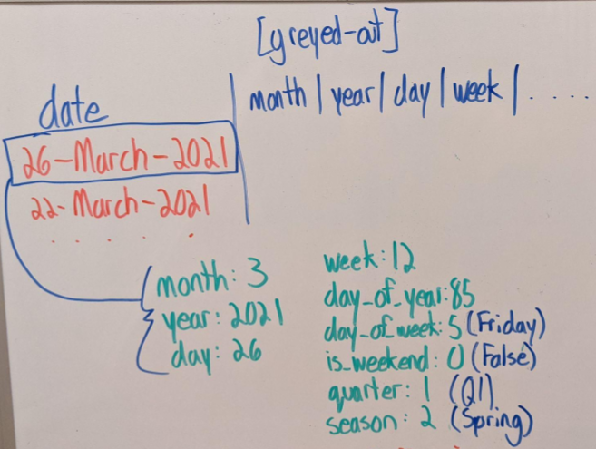

Machine Learning Modelling Concepts
Last updated on 2025-02-24 | Edit this page
Estimated time: 0 minutes
Overview
Questions
- What are models and algorithms?
- What factors should we consider when choosing a machine learning model?
Objectives
- Understand the two definitions of model, and what an algorithm does
- Describe the difference between a model of data, and a model trained on data
- Understand the term Explainable AI
- Explain the purpose of feature engineering
Models and Algorithms
There is a lot of jargon and terminology in Machine Learning, and it can be confusing to a newcomer especially when some terms have more than one meaning. The term model is one such example. In this episode we will present two definitions of model, and also introduce the term algorithm.
Modelling the world
Whether the task is prediction or classification, the method supervised or unsupervised, the underlying principle is one of modelling the world through data.
We as humans are making models all the time. A quick look out the window and our in-built weather model, learned from past soakings, helps us make the umbrella decision. At school we learned one of the simplest models for numerical data - the average. An average is an example of a conceptual model, a generalised way to describe a real world process. In this case it represents the typical value in some population. To apply this model to a real world problem we need data and an algorithm. Working within the constraints of the conceptual model the algorithm will adjust a set of numerical parameters until it achieves the best it can against some optimisation target. It uses the data to help achieve this goal. The final values of the parameters when the target is met are a trained model. The trained model provides a mathematical process for converting an input to an output.
If I were to try to guess the height of the next person to walk through the door, the average would be a good conceptual model to use. The algorithm that you probably learned as a child is to add up all the heights and then divide by the number of measurements. If the data we had available was heights of 19 year old Finnish people then the trained model would, given any input, return a value of 173.5cm (according to Wikipedia) .
It will be wrong a lot of the time but it will be the best single parameter model available. A famous aphorism in the statistical and machine learning communities says:
“All models are wrong, some are useful” - George Box (1976)
In machine learning we have lots of models to choose from, and choosing a model depends on the type of data, the amount of data, the purpose, and a certain amount of pragmatism.
Consider the following scenarios:
- We want to predict online shop visitors based on the number of marketing tweets about the shop sent out in a month
- Assuming a straight line relationship, we need a model with two parameters. The first parameter is the expected visitors when there are no tweets sent. The second is the slope - how much visitors increases (or decreases) with each tweet.
- The conceptual model is a linear model, and with a few past examples of visitor numbers and tweets, we can use the least squares algorithm to find the parameters which best predict the effect of increased tweets. The trained model consists of the two parameters and a formula using them to convert tweets into visitors.
- A straight line only goes in one direction. In reality we would expect the data to plateau out, or even decline, after a certain number of tweets. We might say that the model underfits the data, it is too simplistic. A model with an extra parameter or two would better capture the diminishing returns. If we used a model with 100 parameters it would find the exact relationship between tweets and visitors in the training data but it wouldn’t generalise well to new data. We call this overfitting.
- With very little training data available the simpler model may perform better because there isn’t enough to learn a more complex relationship from.
Callout
In machine learning we always work with two sets of data. The training data is used to train the model, the testing data is used to verify whether the model will generalise to unseen data. It is important that the training data and testing data are both representative of the real world data we will use our model against in an application but they must not overlap with each other. The process of training a model is often called the Data Science Lifecycle. It is an iterative process of finding the best model using training data. The very end of this process is when the test data is used, and often in competitive situations (e.g. an academic competition, or private companies competing for a tender) the test data is not seen by the data scientists at all.
- We want to translate Medieval Latin text into English
- In this case we need a conceptual model which maps one sequence (a Latin sentence), to another (an English sentence). The trained model may be a neural network which consists of millions of parameters stored in matrices. These parameters are necessary to capture all the nuances of language translation. The algorithm used will most likely be gradient descent which is an efficient method of adjusting millions of parameters as training data is fed through the algorithm. What the algorithm does is find the parameter values which best map input to output, with best meaning the ones which make the fewest mistakes.
- With millions of parameters we need thousands or millions of training examples. This has both a human cost in creating the training data, and a computational (energy) cost
Explainable AI
One important consideration when choosing a model may be to do with explaining results. In the first scenario, above, we can explain the whole model. “Every time we send a tweet, online visitors increase by …”. In the Latin translation scenario we can’t describe the model in those terms. However, we may be able to see which word(s) in the input were most influential in deciding each word in the output. This is known as Explainable AI and is a big topic in the fields of AI and Human Computer Interaction. In some scenarios it may be essential to be able to explain exactly why a decision was made, so a model which allows us to spell out the exact calculation has to be used. This may involve losing out on the more accurate results of a model that can not be explained. Explainable AI aims to remove the need for such compromises. As well as explaining individual decisions we need to understand the behaviour of our model on a more systemic level. The episode on bias will address the issues we face when this is not done correctly.
Getting the best out of the data
Although a lot is said about algorithms when discussing machine learning, the data is the most important part. A model trained on 19 year olds will be no good at predicting the heights of primary school children. Machine learning algorithms expect numerical inputs but we can have a lot of influence in how those inputs are derived and even add in our own knowledge.
Feature engineering
One of the trends seen in machine learning, especially in the field of deep learning is that the more training data available, the better the results, and the more complex problems can be solved. While this is true, it is not helpful if you don’t have much training data available and need to work with simpler conceptual models but still want to solve complex problems.
One solution to this is to use expert domain knowledge of the data to augment it with additional features. This process is known as Feature engineering. As a worked example, we will consider a column of dates. To a computer a date (without the time portion) is a sequential number which represents the number of days since a certain fixed point in time (e.g. 1st January 1970). As a number it doesn’t contain any of the periodic information that a date in other formats does. As domain experts we can add some insight to the machine learning process by representing a date in different ways.
If my task was to predict visitor numbers to a museum I might convert a date to a weekday/weekend indicator, or match it to a school holiday calendar. The following diagram shows several different representations of the same date:

Embeddings
Machine Learning algorithms require numerical inputs, which often means we need to convert our data into numerical form. In the case of text this can be problematic. One option is have each word as a feature but then our model can only use words appearing in the training data. Also we lose the semantic nature of words - for example, the words car and automobile are treated as independent features. Word embeddings allow us to capture relationships between words by placing them in a large multi-dimensional (numerical) space, such that words with similar meanings are in some way closer to each other. The multi-dimensional nature allows for the multiple meanings of many words. For example, Date is a representation of time, a fruit, and an evening out with dinner.
To illustrate creating word embeddings, here is a simple two dimensional representation of different fruits. Each fruit is represented by two numbers: their ‘roundness’, and their colour on a ‘rainbow’ scale (Red=0.0, Violet=1.0). In reality we wouldn’t define the dimensions, and they wouldn’t be interpretable in this way. Now if we wanted to represent Kiwi numerically it would be [0.7,0.5]. We also see that Banana is most similar to Lemon, so perhaps we would need to add a ‘Citrus’ dimension for a better representation.
| 0.0 | 0.4 | 0.7 | 1.0 | |
|---|---|---|---|---|
| R (0.0) | Strawberry | |||
| O (0.16) | Orange | |||
| Y (0.33) | Banana | Lemon | ||
| G (0.5) | Kiwi | |||
| B (0.66) | Blueberry | |||
| I (0.83) | ||||
| V (1.0) | Plum |
Key Points
- Conceptual models describe a general relationship between inputs and outputs
- Trained models are a numerical realisation of a conceptual model learned from data
- Explainable AI is an essential tool for understanding complex models